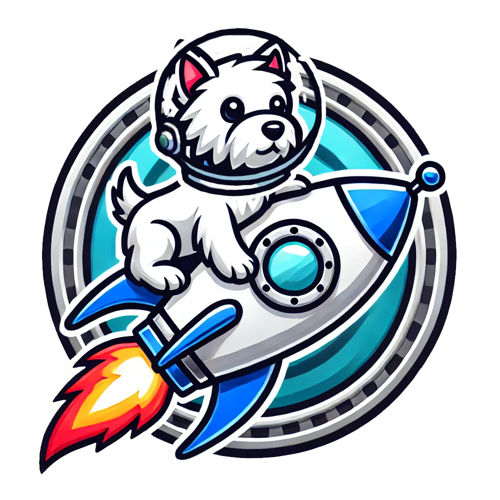

JACK token
Greatest memecoin.
CA: exampleqTtzyJocskewXARgcLoAfSxkmmoUwwfhbpump

"Jack" is a memecoin inspired by the West Highland White Terrier (Westie), aiming to bring fun and community engagement through its playful tokenomics. Investors participate in a bonding curve model, determining Jack's initial price based on supply and demand. As the community grows, a portion of generated liquidity is allocated to enhance trading on decentralized exchanges, with subsequent token burns to reduce supply over time, potentially increasing value.
How To Buy
- Create a crypto wallet for solana (e.g., Phantom).
- Buy Solana (SOL) on an exchange (e.g., Coinbase).
- Send SOL to your crypto wallet.
- Connect your wallet to pump.fun or raydium.
- Swap SOL for JACK.
Buy on Raydium
About
Introducing Jack: The Westie Astronaut Memecoin
Meet Jack, the Westie astronaut, the canine pioneer who is taking the cryptocurrency world by storm with his very own memecoin. Jack isn't just any ordinary dog; he's a brave, adventurous West Highland White Terrier (Westie) who dreams big and reaches for the stars—literally. With his adorable space suit and helmet, Jack represents the spirit of exploration and the boundless possibilities of the crypto universe. This memecoin celebrates Jack's journey from a humble dog park to the vast expanse of space, capturing the imagination of crypto enthusiasts and dog lovers alike. Jack's story is one of courage, determination, and a touch of playful mischief, making his memecoin an irresistible addition to any digital wallet.
Jack the Westie Astronaut Memecoin isn't just about cute imagery; it embodies a mission of community and fun. The coin is designed to bring people together, fostering a supportive and enthusiastic community of holders who believe in the power of a shared dream. Whether you're a seasoned crypto investor or a newcomer, Jack's memecoin offers a whimsical yet meaningful way to participate in the crypto market. With a roadmap that includes exclusive NFT releases, space-themed merchandise, and charitable initiatives supporting animal welfare, Jack's memecoin is more than just a digital asset—it's a movement. Join Jack on his cosmic adventure and be a part of a memecoin revolution that’s out of this world!